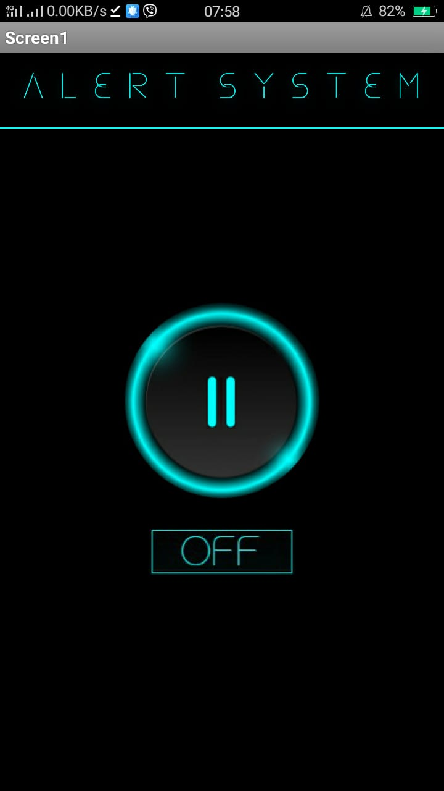
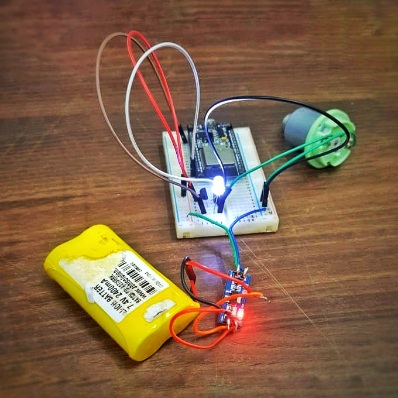
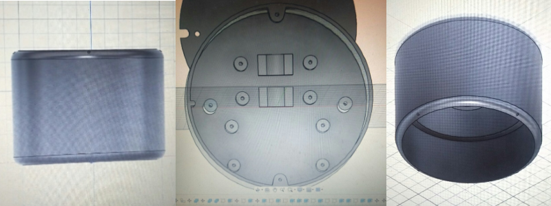

WEEK 2
April 17 2021
In the last week the basic electronic circuit setup was done.And we tested our electric circuit using a basic Blynk application , we found the circuit to be working as expected.Then sir insisted us to develop the application in MIT App inventor.Intially we plan to implement using ESP 32 but we met with some trouble.ESP 32 had bluetooth but it ranges 10m radius only.Then we decided to opt for wifi based over a bluetooth connection so that our app can function within a wider range.We switched to ESP8266 instead because we thought it will be helpful to do what we were planning with the microcontroller.
The charging circuit made by our team.
Simultaneously, other team members designed the case of the product using AutoCad. We finalized the design model given below after working with 2-3 designs because this one is very aesthetic, ergonomic and its easy handling. We considered the safety features also while designing. To view the final design Click here.
Initial Design
Final Design